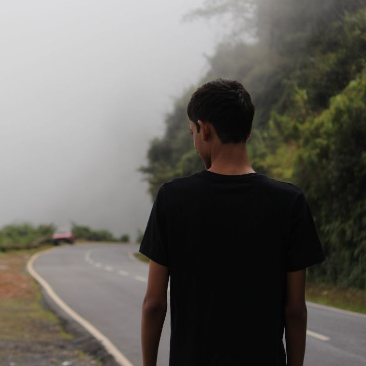

Sarthak Mishra
MS CSE (Robotics)
International Institute of Information Technology Hyderabad
I am currently pursuing my MS by Research with a specialization in Robotics, where I am advised by
Prof. Spandan Roy
.
My main research deals with language guided aerial manipulation and robot control.
Previously, I worked as a Research Associate on a medical robotics
project with AIIMS New Delhi funded by the Indian Council of Medical Research (ICMR).
News
- Dec 2025 — BRIS: Bab_Sak Robotic Intubation System available on arXiv
- Nov 2025 — AERMANI-VLM paper available on arXiv
- Oct 2025 — Robotics TA for Research Affiliate Program
- Jan 2025 — TA for Course EC4.501 Advances in Robotics and Control
- Jan 2024 — Started MS at IIIT Hyderabad
Research
AERMANI-VLM: Structured Prompting and Reasoning for Aerial Manipulation with Vision Language Models
Sarthak Mishra, Rishabh Dev Yadav, Avirup Das, Saksham Gupta, Wei Pan and Spandan Roy.
arXiv, 2025
We present AERMANI-VLM, a framework that adapts pretrained vision-language models
for language-guided aerial manipulation by separating high-level reasoning from
low-level control without task-specific fine-tuning.
Bab_Sak Robotic Intubation System (BRIS): A Learning-Enabled Control Framework for Safe Fiberoptic
Endotracheal Intubation
Saksham Gupta, Sarthak Mishra, Arshad Ayub, Kamran Farooque, Spandan Roy and Babita Gupta.
arXiv, 2025
This paper presents BRIS, a human-in-the-loop robotic platform designed to assist
fiberoptic-guided endotracheal intubation with learning-enabled control for safe
clinical deployment.
Experience
Robotics Research Center — IIIT Hyderabad
Research Associate (2023 – Present)
Work on robotic arms, quadcopters, aerial grasping, and robotic medical systems.
AIIMS – ICMR
Research Associate (2021 – 2024)
Developed control systems and AI tools for robotic medical procedures.
Team Darvin — Intelligent Ground Vehicle Competition - Oakland University Detroit
Team Captain (2021 – 2023)
Achieved 3rd and 7th place internationally.
MPSTME Racing Team
Core Member of Data Aquisition and Electronics Team (2018 – 2019)
Built a custom dashboard with GPS for data logging and displaying for an rugged All Terain Vehicle for the Baja competition.
Projects
MPC Holonomic Navigation Robot
ROS2 Nav2 + MPC + SLAM robot platform.
3D Dense Reconstruction
Multi-view geometry dense reconstruction pipeline.
Last updated: February 2026